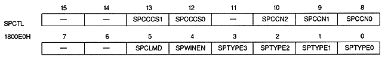
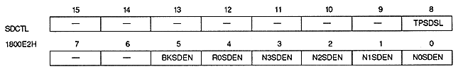
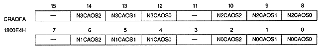
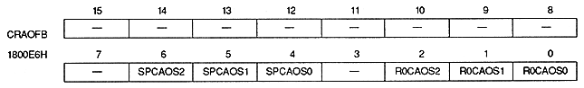
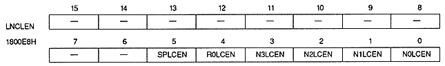
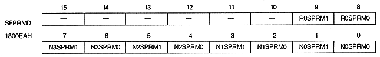
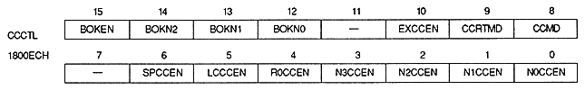
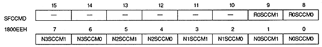

Return to previous page ｜ Return to menu ｜ Go to next page
Sprite control

Shadow control

Color RAM address offset (NBG0 to NBG3)

Color RAM address offset (RBG0, sprite)

● Line color screen enable

Special priority mode

Color calculation control

Special color calculation mode

Return to previous page ｜ Return to menu ｜ Go to next page